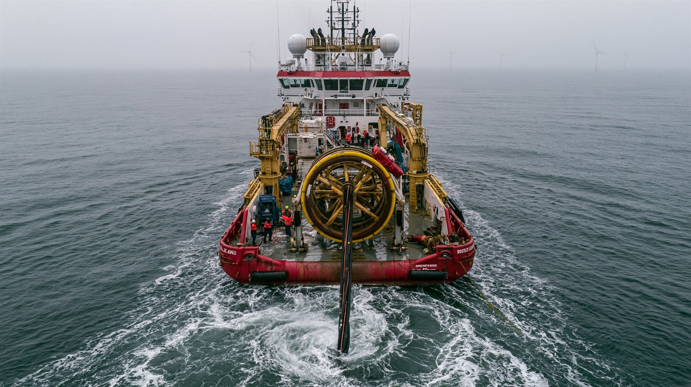
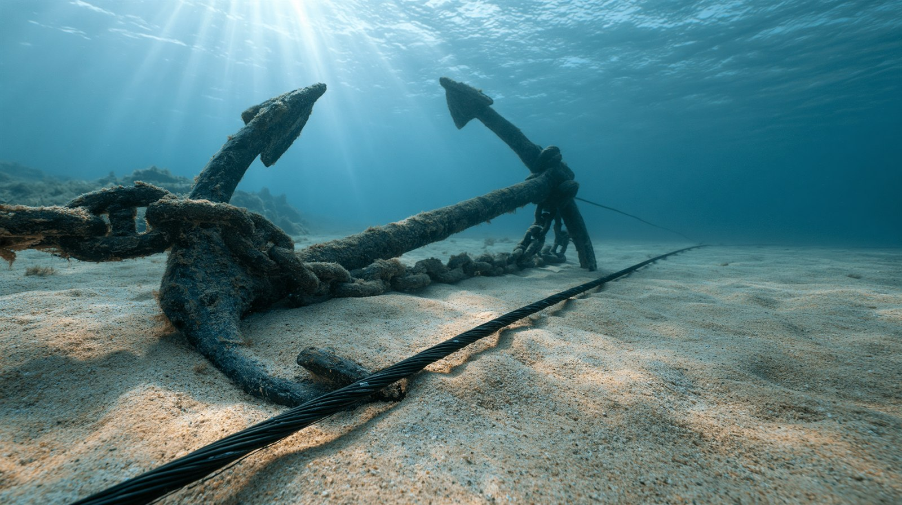

01 「見えないインフラ」の急所
スマホの通信も、国際送金も、その大半は衛星ではなく海底ケーブルを通る。
大陸をまたぐインターネット通信の約99%がこの細い線に依存している
（※これは「大陸間」の数字で、国内で完結する通信は含まない）。世界には稼働・計画中で600本超、
総延長およそ120〜150万キロのケーブルが走る。
問題は、この生命線が驚くほど無防備なことだ。多くは直径数センチで、浅い海では海底に露出している。
そして物理的損傷の大半は、本来は投錨・底引き網・地震などの「事故」で起きる。
年間で世界に100件以上の損傷があり、その多くは偶発的なものだ。だからこそ——意図的な妨害は「事故にまぎれやすい」。
本記事は個別事案について「どの国が攻撃した」と断定しない。確定した事実と、各当事者の主張・反論を区別して示す。

海底ケーブルの敷設・修理は限られた専用船に頼る。世界的に修理能力が不足しており、復旧に時間がかかることも脆弱性の一つ。※イメージ画像（生成AI）
02 3つのホットスポット（確認された事実）
バルト海
2023年10月〜
少なくとも11本のケーブルが損傷。2024年12月、ロシアの「影の船団」とされるタンカーEagle Sが錨を引きずり複数を切断した疑いで、フィンランド特殊部隊が臨検・拿捕した。
関与は否定・捜査継続
台湾周辺
2023年・2025年
2023年2月、馬祖島の2本が中国船で相次ぎ切断され住民が約2か月ネット途絶。2025年1〜2月にも台湾沖で損傷。台湾は「グレーゾーン戦術」と非難、中国は「事故・密輸」と反論。
主張が真っ向から対立
紅海
2024年・2025年
2024年初め、紅海でケーブルが切断されアジア・欧州間データの25%に影響。2025年9月にもジッダ沖で損傷しインド・パキスタン等に波及。フーシ派は攻撃を否定している。
フーシ派は関与を否定
03 なぜ「証明できない」のか
この問題の核心は立証の難しさにある。米欧の情報当局の見解さえ割れている。
2025年1月、複数の米欧当局者は「バルト海の損傷の多くはサボタージュではなく事故の可能性が高い」との見方を示した。
一方、ドイツのピストリウス国防相は同じ事案を「サボタージュだ」「誰も偶然に切れたとは思っていない」と断じた。
海事専門家は、バルト海で2023年以降に錨の引きずり事故が3回起きる確率は「ゼロではないが極めて低い」と指摘する。
しかし決定打にはならない。最も簡単な妨害手段は「ありふれた事故に見せかけること」——
錨をゆっくり引きずってケーブルを切れば、過失と意図の区別はほぼつかない。公海上の行為を裁く国際的枠組みも弱い。
これが「影の戦争（グレーゾーン）」と呼ばれるゆえんだ。

引きずられた錨は、事故でもケーブルを切る。「過失」と「意図」を見分けるのは極めて難しく、立証の壁となっている。※イメージ画像（生成AI）
04 各立場の主張
核心的主張
短期間に集中する損傷は偶然とは考えにくく、ロシアの「影の船団」によるグレーゾーン攻撃の疑いが強い。2025年1月に防護作戦「Baltic Sentry」を開始し、艦艇・哨戒機・海洋ドローンとAIで監視を強化した。
立場の幅
ドイツのピストリウス国防相のように「サボタージュ」と明言する声がある一方、確証は得にくく、抑止と監視の強化で対応するという現実的な姿勢も併存する。
背景：重要インフラ防護、対ロシア抑止、域内の信頼確保
核心的主張
一連の損傷への関与を否定。証拠なき非難であり、西側が反ロシア感情を煽るための言いがかりだと反論する立場を取る。
論点
「影の船団」（制裁逃れの老朽船群）の存在は指摘されるが、個々の切断について意図を立証するのは難しく、断定はできていない。
背景：制裁回避、否認可能性（プローザブル・デニアビリティ）の維持
核心的主張
離島と本島を結ぶケーブルの相次ぐ切断は、中国による「グレーゾーン戦術」の圧力だと主張。哨戒を強化し、衛星や予備回線による冗長性の確保を急ぐ。
現実
2023年の馬祖島では住民が約2か月ネット途絶を経験。デジタル依存の離島ほど被害が大きく、復旧の遅さも課題として露呈した。
背景：通信の冗長性確保、対中圧力への耐性、離島防衛
核心的主張
意図的な妨害を否定。2025年2月のHong Tai 58について、中国当局は「台湾人船員が冷凍品を密輸していた」と説明し、台湾の与党が政治目的で「中国の妨害」と偽っていると批判した。
論点
当事者の説明が真っ向から食い違い、第三者による検証も難しい。事実認定そのものが情報戦の一部になっている。
背景：否認可能性の維持、台湾への圧力、対外イメージ
核心的主張
物理的損傷の大半は本来「事故」であり、過剰な犯人探しは誤った緊張を生むと警告。一方で、事故を装った妨害の可能性も否定はできず、「分からない」を「分からない」と認める誠実さが必要だと説く。
提言
重要なのは犯人の断定よりも、監視（detect）・抑止（deter）・法的追及（sue）と、回線の冗長化・修復能力の強化だという現実的な対策論。
背景：事実に基づく評価、過剰反応の回避、実効的な防護
| 立場 |
基本姿勢 |
主張 |
弱点・限界 |
| NATO・北欧 | 疑い濃厚・防護 | 影の船団によるグレーゾーン攻撃 | 確証を得にくい |
| ロシア | 関与を否定 | 証拠なき言いがかり | 影の船団の存在は指摘される |
| 台湾 | 中国のグレーゾーン戦術 | 離島ケーブルへの圧力 | 意図の立証が困難 |
| 中国 | 事故・密輸と反論 | 台湾の政治利用と批判 | 説明の第三者検証が困難 |
| 慎重派・専門家 | 多くは事故 | 断定回避・対策重視 | 妨害の可能性も否定できず |
05 データ・統計
海底ケーブルの規模と役割
120〜150万km
ケーブル総延長（地球を何周分も）
出典: 国連 / TeleGeography 系資料 2025〜2026
主な損傷事案（確認された事実）
バルト海は2023年10月以降の累計。出典: NATO / 防衛報道
紅海ケーブル切断の影響（2024年）
アジア・欧州間データの約25%に影響。出典: 各種報道 2024
各国の対応（事実）
- NATO「Baltic Sentry」
2025年1月開始。艦艇・哨戒機・海洋ドローン＋AIで監視
- フィンランド
2024年12月、タンカーEagle Sを臨検・拿捕（大戦以来初）
- 台湾
哨戒強化・通信の冗長化（衛星・予備回線）を推進
06 情報源・参考メディア
Carnegie Endowment / Atlantic Council
バルト海の影の船団と海底インフラ妨害の分析
【専門シンクタンク】
NATO / Defense News
Baltic Sentry・損傷件数の公式情報
【公式・防衛報道】
Al Jazeera / CNN
台湾・中国の事案と双方の主張
【当事者双方の報道】
NYT系 / The Spokesman-Review
「多くは事故」とする当局見解
【慎重論・反証】
RAND / CSIS / SIPRI
立証の難しさ・防護と法的対応の論考
【政策・安全保障分析】
NBC / CNBC / 国連News
紅海事案・海底ケーブルの基礎情報
【国際報道・一次情報】